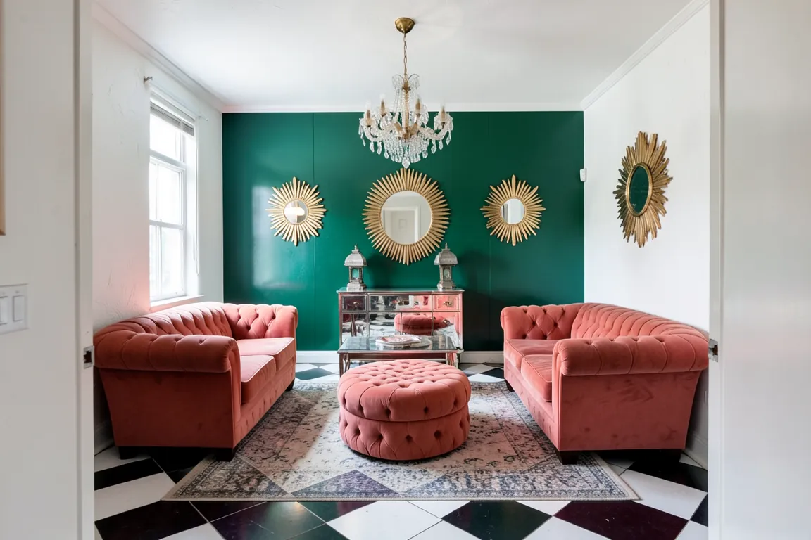

Комната декоратора для кинозвёзд. Регентские и неоклассические формы встречают лаковый цвет, смелые полосы и зеркало; симметричный план вокруг центральной вещи, белая штукатурка и позолота делают каждую комнату готовой для камеры.

Главная идея
Комната — съёмочная декорация: смелый цвет, глянец и симметрия помогают людям в ней выглядеть лучше.
Принципы дизайна
Планируйте комнату вокруг одной центральной вещи, такой как круглый стол или пуф, с сиденьями парами вокруг.
Смело берите один насыщенный цвет, часто лакированный, против белого или чёрного.
Добавляйте зеркало и позолоту для блеска: зеркальную мебель, золочёные рамы и латунную фурнитуру.
Берите смелый графичный узор на одной поверхности: широкие полосы, решётку или чёрно-белый пол.
Смешивайте регентские и неоклассические формы, такие как стулья клисмос и пагоды, с современным комфортом.
Сделайте комнату фотогеничной: тёплый свет, льстящий лицам, и чистый вид на каждую пару.